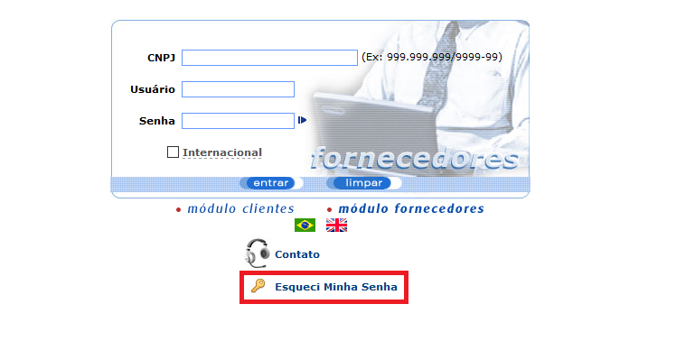
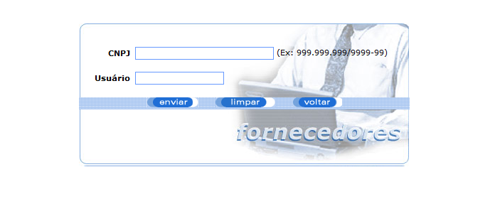
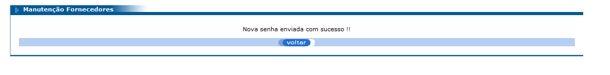

Documentação do Fornecedor - eProcurement
Esta tela permite ao usuário fornecedor solicitar uma nova senha caso o mesmo tenha perdido e/ou esquecido da senha de login.
Podemos ver que na tela inicial do módulo fornecedores há um campo chamado "Esqueci minha Senha".
Ao clicar nesse campo, você será redirecionado para uma nova tela para o preenchimento dos dados necessários. Veja abaixo:
Os campos que consistem nessa tela são:
• CNPJ: Informe o seu CNPJ.
• Usuário: Informe o seu usário de login.
• Enviar: Enviar os dados digitados para verificação.
• Limpar: Limpa os dados da tela.
• Voltar: Volta para a página inicial.
Por fim, após clicar no botão "Enviar" uma nova senha será gerada e enviada para o e-mail vinculado ao usuário digitado.
